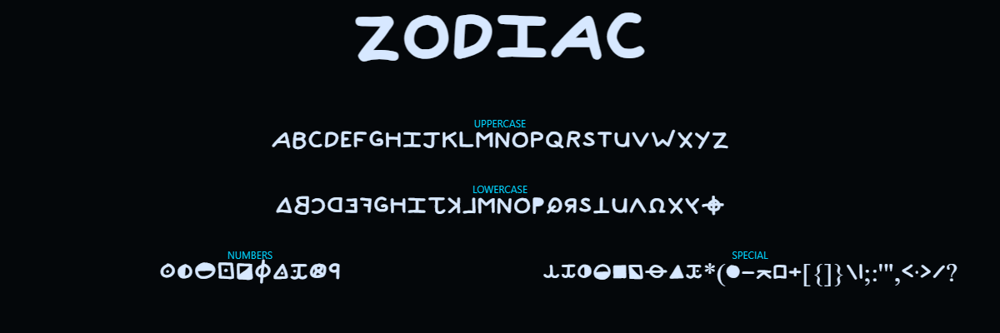
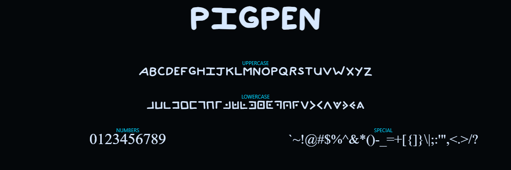

Create Authentic Cipher Puzzles
Welcome to the NQR Labs collection of cipher fonts. Each font in this collection has been meticulously handcrafted to provide authentic cipher alphabets for alternate reality games, puzzle hunts, escape rooms, and cryptography education.
All fonts are free for personal & commercial use under the SIL Open Font License 1.1. You may modify and redistribute the fonts. If you share the font files or derivatives, include OFL.txt and keep the copyright notice. Modified versions must be renamed. You may not sell the font file by itself (bundling is fine). No attribution required in end-products, but credit is appreciated.

A cipher font based on the infamous symbols used by the Zodiac Killer in his cryptographic messages from the late 1960s and early 1970s. This font recreates the symbols from the Zodiac's most famous ciphers, including the 408-character cipher (solved in 1969) and the 340-character cipher (solved in 2020).
Perfect for historical true crime ARGs, cryptography education, and authentic-looking cipher puzzles.
Characters
26 letters + numbers + punctuation
Style
Historical cipher symbols
Formats
TTF, OTF, WOFF2
License
OFL 1.1 (Free)

The classic Freemason cipher, also known as the Masonic cipher or tic-tac-toe cipher. This geometric substitution cipher uses two grids (a 3x3 grid and an X-shaped grid) with dots to represent the 26 letters of the alphabet.
Used by secret societies since the 18th century, this cipher remains popular for educational cryptography and mystery-themed puzzles. The clean geometric design ensures maximum legibility.
Characters
26 letters (A-Z)
Style
Geometric grid cipher
Formats
TTF, OTF, WOFF2
License
OFL 1.1 (Free)
A mystery-themed symbol substitution cipher inspired by cryptographic puzzles in adventure media. Combines geometric shapes, modified letters, and occult-style symbols to create a visually distinctive cryptographic alphabet.
This is the first font in the planned Falls Cipher series, which will cover various symbol cipher systems from mystery-themed sources. Perfect for supernatural mysteries, adventure ARGs, and puzzle hunts.
Characters
26 letters (A-Z)
Style
Mystery/Occult symbols
Formats
TTF, OTF, WOFF2
License
OFL 1.1 (Free)
Create Your Own Cipher Font
All fonts in this collection were created using Calligraphr, a powerful web-based tool that lets you transform your handwriting or custom designs into working fonts. No software installation required!
Whether you want to create a cipher font for your ARG, design a handwriting font, or build a custom alphabet, Calligraphr makes it simple with an intuitive workflow: print templates, draw your glyphs, upload, and generate your font.
Visit Calligraphr.com →
Free tier includes up to 75 characters. Pro features available for advanced typography.
Generate Professional Specimens
Once you've created your font, use our Specimen Generator to create beautiful preview images. Upload your font file, customize the layout, and download professional 1200x400px PNG specimens ready for web galleries.
Open Specimen Generator